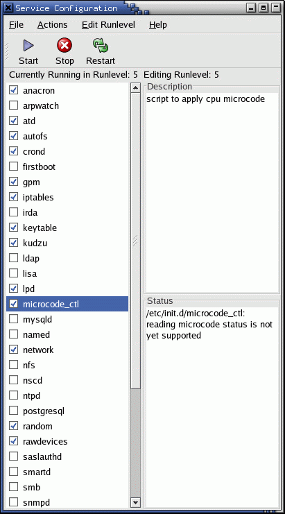
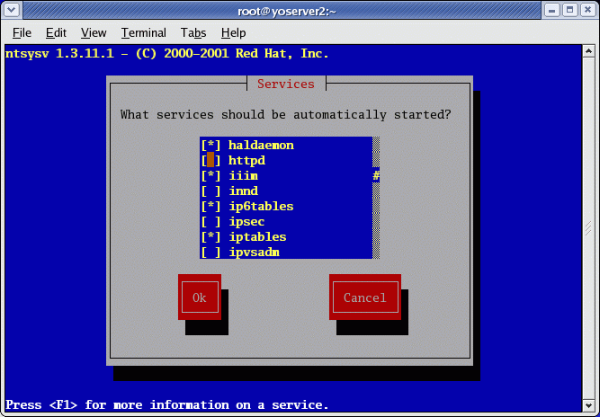
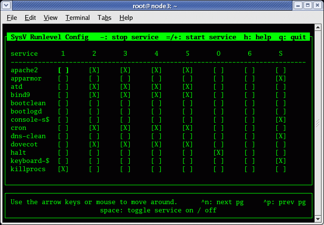

Related YoLinux Tutorials:
°Integrate Linux into MS/Windows environment
Free Information Technology Magazines and Document Downloads
| PC Boot and Linux Init Process: |
- BIOS: The Basic Input/Output System is the lowest level interface between the computer and peripherals.
The BIOS performs integrity checks on memory and seeks instructions on the Master Boor Record (MBR) on the floppy drive or hard drive. - The MBR points to the boot loader (GRUB or LILO: Linux boot loader).
- Boot loader (GRUB or LILO) will then ask for the OS label which will
identify which kernel to run and where it is located (hard drive and partition specified).
The installation process requires to creation/identification of partitions and
where to install the OS. GRUB/LILO are also configured during this process.
The boot loader then loads the Linux operating system.
- See the YoLinux tutorial on creating a boot disk for more information on GRUB and LILO and also to learn how to put the MBR and boot loader on a floppy for system recovery.
- The first thing the kernel does is to execute init program. Init is the root/parent of all processes executing on Linux.
- The first processes that init starts is a script /etc/rc.d/rc.sysinit
- Based on the appropriate run-level, scripts are executed to start various processes to run the system and make it functional.
| The Linux Init Processes: |
The init process is the last step in the boot procedure and identified by process id "1". Init is responsible for starting system processes as defined in the /etc/inittab file. Init typically will start multiple instances of "getty" which waits for console logins which spawn one's user shell process. Upon shutdown, init controls the sequence and processes for shutdown. The init process is never shut down. It is a user process and not a kernel system process although it does run as root.
System Processes:
-
Process ID Description 0 The Scheduler 1 The init process 2 kflushd 3 kupdate 4 kpiod 5 kswapd 6 mdrecoveryd
Init config file (Red Hat 7.3-9.0, Fedora Core 1-3): /etc/inittab
-
# Author: Miquel van Smoorenburg,
# Modified for RHS Linux by Marc Ewing and Donnie Barnes id:3:initdefault: # System initialization. si::sysinit:/etc/rc.d/rc.sysinit l0:0:wait:/etc/rc.d/rc 0 l1:1:wait:/etc/rc.d/rc 1 l2:2:wait:/etc/rc.d/rc 2 l3:3:wait:/etc/rc.d/rc 3 l4:4:wait:/etc/rc.d/rc 4 l5:5:wait:/etc/rc.d/rc 5 l6:6:wait:/etc/rc.d/rc 6 # Things to run in every runlevel. This line is only in Red Hat 7.X Used to flush disk buffers. ud::once:/sbin/update # Trap CTRL-ALT-DELETE ca::ctrlaltdel:/sbin/shutdown -t3 -r now # When our UPS tells us power has failed, schedule a shutdown for 2 minutes from now. pf::powerfail:/sbin/shutdown -f -h +2 "Power Failure; System Shutting Down" # If power was restored before the shutdown kicked in, cancel it. pr:12345:powerokwait:/sbin/shutdown -c "Power Restored; Shutdown Canceled" # Run gettys in standard runlevels 1:2345:respawn:/sbin/mingetty tty1 2:2345:respawn:/sbin/mingetty tty2 3:2345:respawn:/sbin/mingetty tty3 4:2345:respawn:/sbin/mingetty tty4 5:2345:respawn:/sbin/mingetty tty5 6:2345:respawn:/sbin/mingetty tty6 # Run xdm in runlevel 5 x:5:respawn:/etc/X11/prefdm -nodaemon
Note that this config file directs the init process to run the shell script /etc/rc.d/rc.sysinit. This script should be used as is and NOT changed. Extend rc.local and NOT this script. This will (not in exact order):
- Run /sbin/initlog
- Run devfs to generate/manage system devices
- Run network scripts: /etc/sysconfig/network
- Start graphical boot (If so configured): rhgb
- Start console terminals, load keymap, system fonts and print console greeting:
mingetty,
setsysfonts
The various virtual console sessions can be viewed with the key-stroke:- RHEL6: ctrl-alt-F2 through F7. F1 is reserved for the GUI screen invoked in run level 5.
- Older systems: ctrl-alt-F1 through F6. F7 is reserved for the GUI screen invoked in run level 5.
- Mount /proc and start device controllers.
- Done with boot configuration for root drive. (initrd) Unmount root drive.
- Re-mount root file system as read/write
- Direct kernel to load kernel parameters and modules: sysctl, depmod, modprobe
- Set up clock: /etc/sysconfig/clock
- Perform disk operations based on fsck configuration
- Check/mount/check/enable quotas non-root file systems: fsck, mount, quotacheck, quotaon
- Initialize logical volume management: vgscan, /etc/lvmtab
- Activate syslog, write to log files: dmesg
- Configure sound: sndconfig
- Activate PAM
- Activate swapping: swapon
Local system boot processes can be placed in file: /etc/rc.d/rc.local
The system will then boot to the runlevel set by the directive initdefault.
Also see:
| Linux init Run Levels: |
The Linux boot process has six states of operation of which "0" is the shutdown state and "3" and above are fully operational with all essential processes running for user interaction. Upon system boot the LINUX system /sbin/init program starts other processes by performing the following:
- Init will bring up the machine by starting processes
as defined in the /etc/inittab file.
- The computer will be booted to the runlevel as defined by the
initdefault directive
in the /etc/inittab file.
-
id:5:initdefault:
The inittab file will allow you to capture key sequences (ctrl-alt-del), start dial in internet connections etc.
-
- One of these process started by init is /sbin/rc.
This script runs a series of scripts in the directories
/etc/rc.d/rc0.d/, /etc/rc.d/rc1.d/,
/etc/rc.d/rc2.d/, etc
- Scripts in these directories are executed for each boot state of operation until it becomes fully operational. Scripts beginning with S denote startup scripts while scripts beginning with K denote shutdown (kill) scripts. Numbers follow these letters to denote the order of execution. (lowest to highest)
Runlevel "3" will boot to text or console mode and "5" will boot to the graphical login mode ( "4" for slackware)
-
Runlevel Scripts Directory
(Red Hat/Fedora Core)State 0 /etc/rc.d/rc0.d/ shutdown/halt system 1 /etc/rc.d/rc1.d/ Single user mode 2 /etc/rc.d/rc2.d/ Multiuser with no network services exported 3 /etc/rc.d/rc3.d/ Default text/console only start. Full multiuser 4 /etc/rc.d/rc4.d/ Reserved for local use. Also X-windows (Slackware/BSD) 5 /etc/rc.d/rc5.d/ XDM X-windows GUI mode (Redhat/System V) 6 /etc/rc.d/rc6.d/ Reboot s or S
Single user/Maintenance mode (Slackware) M
Multiuser mode (Slackware)
One may switch init levels by issuing the init command with the appropriate runlevel. Use the command "init #" where # is one of s,S,0,1,3,5,6. The command telinit does the same.
The scripts for a given run level are run during boot and shutdown. The scripts are found in the directory /etc/rc.d/rc#.d/ where the symbol # represents the run level. i.e. the run level "3" will run all the scripts in the directory /etc/rc.d/rc3.d/ which start with the letter "S" during system boot. This starts the background processes required by the system. During shutdown all scripts in the directory which begin with the letter "K" will be executed. This system provides an orderly way to bring the system to different states for production and maintenance modes.
If you installed all demons (background processes), Linux will run them all. To avoid slowing down your machine, remove unneeded services from the start-up procedure. You can start/stop individual demons by running service init scripts located in the /etc/init.d/ directory:
- /etc/rc.d/init.d/ (Red Hat/Fedora) Also /etc/init.d/ which is linked to /etc/rc.d/init.d/
- /etc/init.d/ (S.u.s.e.)
- /etc/init.d/ (Ubuntu / Debian)
- /etc/init.d/httpd stop
Use the command ps -aux to view all process on your machine.
TIP: List state and run level of all services which can be started by init: chkconfig --list
or
service --status-all | grep running (Red Hat/Fedora Core based systems)
GUI tool: /usr/X11R6/bin/tksysv
| Run Level Commands: |
- Shutdown:
- Reboot:
- Enter single user mode:
- init 1
| Init Script Activation: |
Adding a script to the /etc/rc.d/rc#.d/ directory with either an S or K prefix, adds the script to the boot or shutdown process. The scripts are run in numerical order. S20abc is run before S30xyz. The extensibility to the boot and shutdown procedures of the operating system is one of the strengths of UNIX. The orderly sequential initiation of processes can be coordinated for dependent processes. The orderly shutdown of processes is often required of complex programs such as databases. This is how it is done. Individual processes may be monitored, shutdown and started at any time using these scripts. i.e. /etc/rc.d/rc2.d/httpd start. The modifiers start, stop or status may be used.
The start/stop/status scripts actually reside in the directory:
- /etc/rc.d/init.d/ (Red Hat/Fedora) Also /etc/init.d/ which is linked to /etc/rc.d/init.d/
- /etc/init.d/ (S.u.s.e. and Ubuntu / Debian)
Basic services include:
| System Service | Description |
|---|---|
| anacron | Run jobs which were scheduled for execution while computer was turned off. Catch up with system duties. |
| arpwatch | Keeps track of IP address to MAC address pairings |
| atd | Run scheduled batch jobs. |
| autofs | automounts file systems on demand. |
| bluetooth, pand, hidd, dund | Bluetooth netwoork support. |
| crond | Job sheduler for periodic tasks. |
| gpm | Allows console terminal cut and paste. (Non X-window consoles) |
| https | Apache web server. |
| iptables | Firewall rules interface to kernel. |
| keytable | Loads selected keyboard map as set in /etc/sysconfig/keyboard |
| kudzu | New hardware probe/detection during system boot. |
| lpd or cups | Network printer services. |
| microcode_ctl | Uploads microcode to kernel and ultimately to the Intle Pentium processor. (Hardware specific.) |
| mysqld | Database services |
| named | DNS name services (Bind) |
| network | Active network services during system boot. Required for network connectivity. |
| nfs | Network file system. Unix file sharing services. Also uses services: nfslock, portmap, rpcgssd, rpcidmapd, rpcsvcgssd |
| nscd | Password and group lookup services for use with network authentication (NIS, LDAP,...). |
| ntpd | Network Time Protocol time synchronization services. |
| random | Random number generation tool used for encryption. |
| rawdevices | Enables raw IO. Useful for Oracle and software which utilizes this for high speed disk access. |
| smb | SAMBA: MS/Windows PC file sharing services |
| syslog | System log file facility. |
| ypbind | NIS file sharing/authentication infrastructure service. |
| yppasswd | NIS file sharing/authentication infrastructure service. |
| ypserv | NIS file sharing/authentication infrastructure service. |
| xfs | X-Windows font server. |
Recommended basic services: anacron, ard, autofs, crond, gpm, iptables, keytable, kudzu, microcode_ctl (Intel32 hardware only), network, random. syslog
Graphics Workstation - add: xfs
File Server for PC clients - add: smb
Print Server - add: lpd or cups (hplip - HP Linux Imaging and Printing)
File server Linux/Unix clients - add: nfs, netfs, nfslock, portmap, ypbind, yppasswd, ypserv; NFSv4 add: rpcgssd, rpcidmapd, rpcsvcgssd
Web Server - add: httpd, tux, xinetdi, sshd
GUI configuration tools:
GUI tools can help you configure the appropriate services to start and provide a description of each service available:- Fedora/RHEL: /usr/bin/system-config-services
(Also /usr/sbin/serviceconf) - Red Hat 8.0/9.0: /usr/bin/redhat-config-services
- Ubuntu / Debian:
{kind=link}
{kind=link}
- 
Red Hat/Fedora Core text console services selection tool: /usr/sbin/ntsysv
- 
Debian/Ubuntu: sysv-rc-conf
(Install: aptget install sysv-rc-conf)
- 
| Init Script: |
A single copy of the script is located in the directory: /etc/rc.d/init.d/script-name (Red Hat/Fedora) or /etc/init.d/script-name (Ubuntu / Debian).
Use the command chkconfig to generate soft links to the appropriate directories for the various run levels.
-
#!/bin/sh
#
# Startup script for program # # chkconfig: 345 85 15 - start or stop process definition within the boot process # description: Description of program # processname: process-name # pidfile: /var/run/process-name.pid
# Source function library. This creates the operating environment for the process to be started . /etc/rc.d/init.d/functions case "$1" in start) echo -n "Starting process-name: "
daemon process-name - Starts only one process of a given name. echo touch /var/lock/subsys/process-name ;; stop) echo -n "Shutting down process-name: "
killproc process-name echo rm -f /var/lock/subsys/process-name rm -f /var/run/process-name.pid - Only if process generates this file ;; status) status process-name ;; restart) $0 stop $0 start ;; reload) echo -n "Reloading process-name: "
killproc process-name -HUP
echo
;;
*)
echo "Usage: $0 {start|stop|restart|reload|status}"
exit 1
esac
exit 0
The bash script functions daemon, killproc and status can all be found in the script /etc/rc.d/init.d/functions. (Red Hat/Fedora distributions)
The script must be executable to work. (chmod +x script-name).
The script may be used to start and stop processes. i.e.:
- /etc/rc.d/init.d/httpd restart
(Ubuntu / Debian / S.u.s.e.: /etc/init.d/apache2 restart) - /etc/rc.d/init.d/httpd stop
- /etc/rc.d/init.d/httpd start
- service httpd restart
- service httpd stop
- service httpd start
Note that two lines in the script enable the chkconfig command to control the script for the boot and shutdown process.
-
# chkconfig: 345 85 15
# description: Description of program
When added to the boot process using the "chkconfig --add script-name" command the start order/priority will be set to 80 while the stop/shutdown order will be set to 15. The process will be added to runlevels 3, 4 and 5. This is enabled by generating links from the location of the script (/etc/rc.d/init.d/) to the directory for the appropriate run level: /etc/rc.d/rc#.d/. The file name in the run level directory will reflect if it is used for boot (starts with an "S") or shutdown (starts with a "K")
| chkconfig: |
The (Red Hat/Fedora/IRIX) chkconfig command generates and breaks links between the directory /etc/rc.d/init.d/ and the appropriate run level directory: /etc/rc.d/rc[0-6].d/ to control boot process initiation and process shutdown.
chkconfig [--level] on | off | reset >
chkconfig --list
chkconfig --list
chkconfig --addchkconfig --del chkconfig --level 0123456 off
Examples:
- chkconfig --level 345 httpd on - forces apache to be invoked for run levels 3, 4 and 5.
- chkconfig --add httpd - Start the web server daemon upon system boot.
- chkconfig --del sendmail - Do not start the sendmail daemon upon system boot.
- chkconfig --list - List all services and init levels.
- chkconfig --list | grep on - List all services to be started upon system boot.
Using chkconfig to administer xinetd processes.
- chkconfig wu-ftpd on - Turn on FTP service managed by xinetd.
- chkconfig ipop3 off - Turn off POP3 service managed by xinetd.
Also see: chkconfig - Linux man page.
| Related Commands: |
-
service Display status of system services.
Example: service --status-all
Help: service --help
Also see: service - Linux man page.
| Links and resources: |
- Linux Standard Base Specification - System Initialization (Chapter 18)
- Redhat Manual: The Boot Process, Init, and Shutdown - 7.1 - 6.2